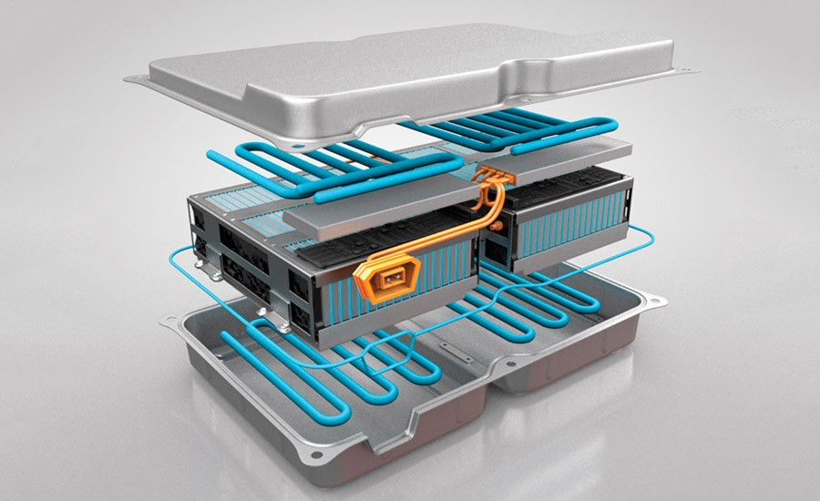
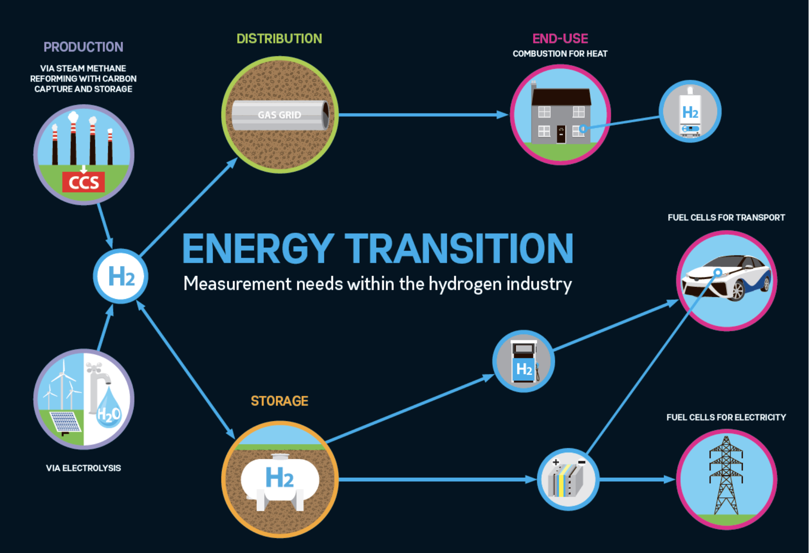
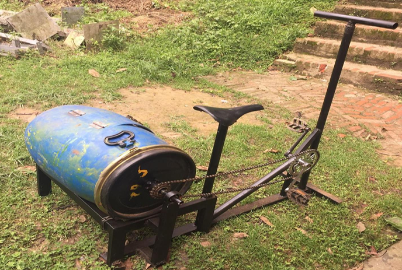
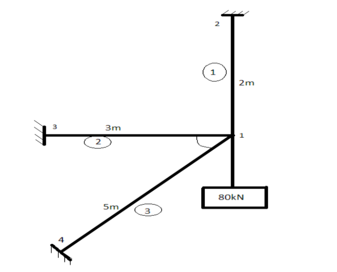
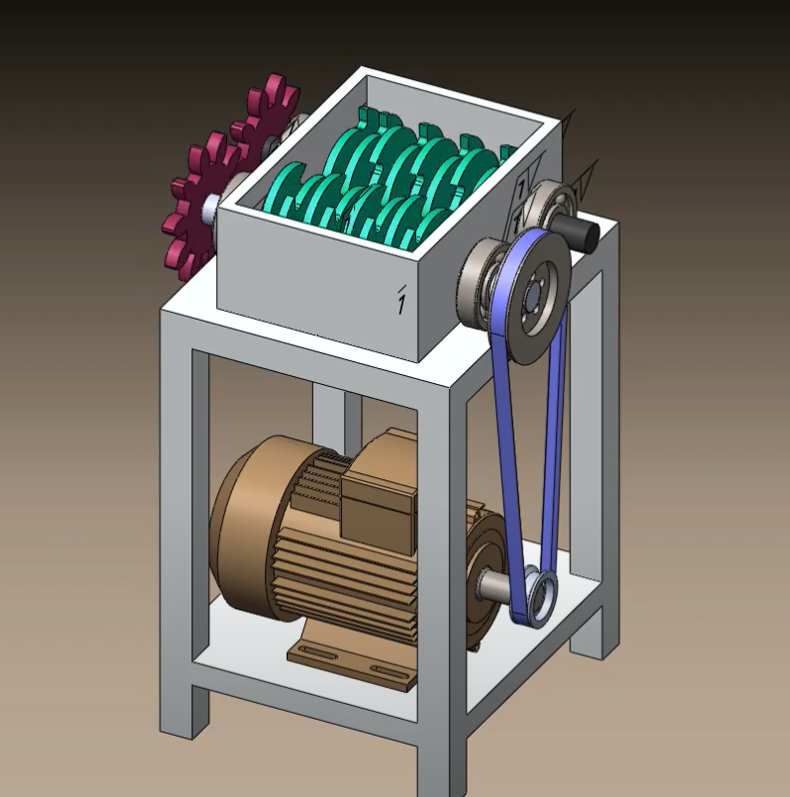
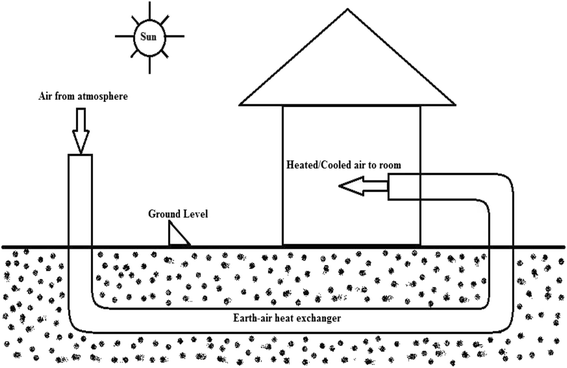
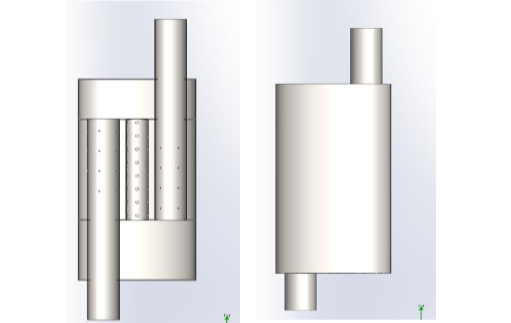
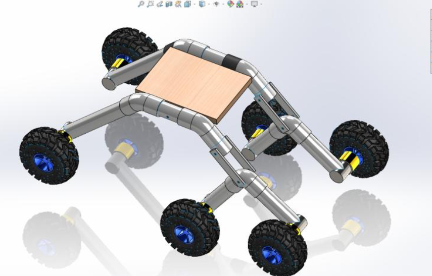
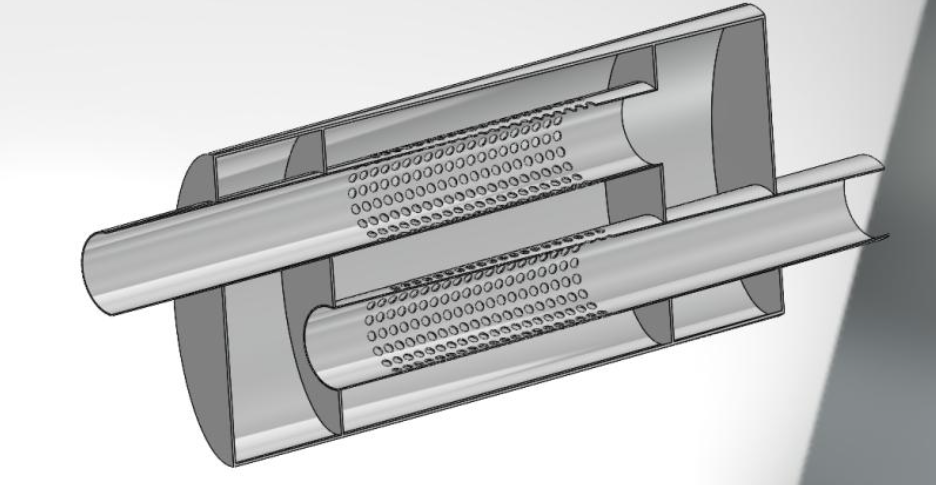
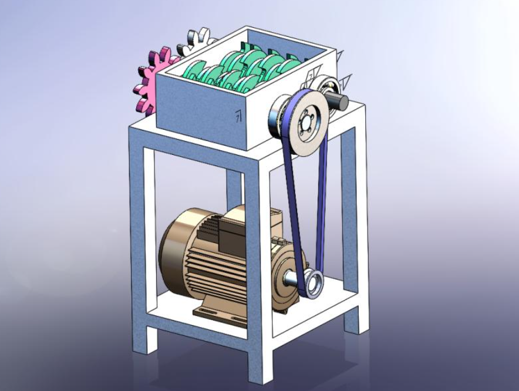

Featured Works
Review Paper
The contemporary global energy landscape is characterized by a growing demand for efficient and sustainable energy storage solutions. Electrochemical energy storage technologies have emerged as pivotal players in addressing this demand, offering versatile and environmentally friendly means to store and harness electrical energy. This comprehensive review critically examines the current state of electrochemical energy storage technologies, encompassing batteries, supercapacitors, and emerging systems, while also delving into the latest advancements and future prospects. The review begins by elucidating the fundamental principles governing electrochemical energy storage, followed by a systematic analysis of the various energy storage technologies. It assesses the key attributes of each technology, including energy density, cycle life, efficiency, and environmental impact, facilitating an impartial evaluation of their comparative merits. Furthermore, recent breakthroughs and innovations in materials science, electrode design, and system integration are discussed in detail. Moreover, this review provides an unbiased perspective on the challenges and limitations facing electrochemical energy storage technologies, from resource availability to recycling concerns. Finally, it explores the future directions of research and development in the field, emphasizing the potential of emerging technologies such as solid-state batteries and redox flow batteries to revolutionize energy storage. In sum, this comprehensive review offers a balanced, academically rigorous analysis of the status and future prospects of electrochemical energy storage technologies, making it a valuable resource for researchers, policymakers, and stakeholders invested in the sustainable energy transition.
Research Article

This comprehensive study delves deeply into the realm of electric vehicle (EV) battery temperature management, with a central focus on optimizing cooling systems using ethylene glycol solutions. The research rigorously examines the interplay between ethylene glycol concentrations and cooling methods on EV battery performance. ANSYS and MATLAB along with analytical methods were used for this project. Key findings reveal a consistent inverse relationship between ethylene glycol concentration and cooling efficiency, favoring lower concentrations. Indirect cooling, achieved with a 30% ethylene glycol solution, emerges as the most effective method, while direct cooling proves less efficient. Notably, mineral oil cooling at 0.04 m/s outperforms air cooling, albeit with higher energy consumption. Consequently, air cooling is recommended for smaller battery packs due to its lower power demand. The study also underscores the importance of selecting ethylene glycol concentrations based on environmental conditions, advocating lower concentrations for warmer climates and higher concentrations for colder regions. In summary, this research significantly advances EV technology by advocating for customized cooling system designs that consider environmental factors, battery specifications, and practical implementation. It provides a critical roadmap for enhancing EV thermal management systems' efficiency and sustainability. Further research is needed to explore the long-term effects of diverse cooling methodologies on battery longevity and performance within the practical constraints of EV integration.
Review Article

The transition to renewable energy systems is imperative for mitigating climate change and achieving sustainable development. Hydrogen, as a versatile and clean energy carrier, plays a pivotal role in this transition. This review paper provides a comprehensive analysis of hydrogen's role in renewable energy systems, focusing on its production methods, storage techniques, and applications across various sectors. Production methods such as electrolysis, biological, and thermochemical processes are discussed, along with storage methods like physical and chemical storage. The paper also delves into the integration of hydrogen into existing renewable energy systems, including its role in grid storage and balancing. Applications in transportation, industrial uses, and residential and commercial energy supply are explored. Economic considerations, including market trends, investments, and policy incentives, are examined. The paper identifies technical, regulatory, and safety challenges, suggesting directions for future research. The review concludes that hydrogen has the potential to revolutionize the renewable energy landscape, but concerted efforts in research, policy formulation, and public-private partnerships are essential for its widespread adoption.
Academic Project

Pedal Powered Washing Machine (PPWM) is a low cost washing machine made up of easily and readily available scrap parts in daily life. It is a machine which generates power through human pedaling and with the drive mechanism, converts the pedaling motion into required rotary motion of the drum. Its innovation lies in its simple design, use of inexpensive parts, very low repairing and maintenance cost, affordability to each member of the society and it does not affect the environment. Our team intends to directly address the problems faced in washing clothes, and thus have developed a new design for easy effort in washing and rinsing clothes. PPWM is a completely new concept, which in its one laundry cycle does washing and rinsing of clothes similar to that of an automatic washing machine available in the market.
Case Study

Finite Element Method is an important method used to solve various engineering problems applying different techniques. This paper studies the use of different finite element techniques to solve a plane truss element with uniformly varying load problem. Methods like Direct method, Rayleigh method, Galerkin’s method, R-method, P-method, H-method are used. The analysis is also performed using ANSYS and MATLAB and compared. The software’s are used to generate deflections graphs. The solution is justified with tolerable amount of deviation from different methods.
Case Study

Pumps are essential components in every industrial facility, with centrifugal pumps being the most common. Centrifugal pumps employ impellers to generate kinetic energy, which is then transferred into pressure energy via a diffuser. As the market for centrifugal pumps is vast, there are several important issues that must be addressed, resulting in downtime in industrial plants. As a result, regular maintenance is critical. Maintenance management has expanded in recent years, which helps to reduce costs and increase efficiency. The importance of fault identification and prognosis is important for the safe operation of centrifugal pumps. This study also discusses the several types of failures in centrifugal pumps, as well as the optimal maintenance strategy and numerous early-failure detection systems. The prevalent failure modes were discovered, and FMEA was utilized to reduce failure risks using a bottom-up strategy. FTA employs a top-down strategy to determining the core cause of problems. This article also includes a methodology for determining the key components of a centrifugal pump. Failure analysis was done on the primary components, RPN was computed, and a critical component was found. These tools can serve as the foundation for reliability-centered maintenance planning. Corrosion within centrifugal pumps can degrade pump performance. Pump failure is typically caused by highly localized components in the pump. It is critical to develop a way to mitigate the impacts of corrosion. To minimize accidents and pump damage when operating centrifugal pumps, the safety advice mentioned in this report should be properly followed.
Academic Project

The disposal of plastic waste is a serious environment issue. The impacts of plastic pollution in the environment have caused problems ranging from less productivity of soil to damage of ecosystems in oceans and even leading to presence of microplastics in our food which has led to several diseases. In this sensitive time of environmental conservation, the proper disposal of plastics has been a key concern. The project, “DESIGN AND FABRICATION OF PLASTIC SHREEDER” aims to address the issue of plastic disposal by means of shredding plastic waste such as bottles, gallons, and other PET waste into smaller granules so that it can be recycled again. However, this project only deals with the shredding of PET plastics and not the recycling process.
Research Project

This research paper demonstrates a case study of a community-centric Earth-Air Cooling system on the Budhanilkantha. The research comprises critical attempts, encompassing heat exchanger design employing the Log Mean Temperature Difference (LMTD) technique, load estimations accomplished utilizing TRNSYS, and temperature abatement assessments executed through ANSYS simulations. The cooling system employed Geothermal energy for summer cooling. The optimization of heat exchanger dimensions required the development of pressure drop-surface area graphs utilizing spreadsheet tools. System selection was predicated upon judicious selection of pipe sizes guided by varying velocities, resulting in an optimal design characterized by a tube velocity of 4.5m/s, a tube length of 46 meters, and a total of 12 tubes. This design led to a 33% temperature reduction, noticeably beyond the projected threshold of 23%. The Earth-Air Cooling system displayed a large heat dissipation capacity of 53.2 kilowatts, thereby exceeding the requisites of peak cooling load. This method provides cooling mechanism for Budhanilkantha and indicates wider application in analogous environmental contexts. To find the optimal sizing of the heat exchanger, a methodology was designed to develop an equation that is applicable in the domain of Nepal and all around the world comprising similar climatic conditions.
Industrial Training

Industrial training is one of the requirements for the award of the bachelor’s degree in mechanical engineering. This report illustrates the experience that I acquired during a three-month industrial training program in L.I Service Center Pvt. Ltd. This training aimed to provide hands-on training/experience in various aspects of vehicle maintenance and repair. Wide range of topics has been included in this report which includes vehicle diagnosis as well as repair procedures, and role of an engineers in service centers. Key findings include the significance of learning and acquiring technical as well as practical skills and need for the continuous learning in the automobile industry. Overall, this training program provided a close insight into the operation of automobile service center and skills required to excel in the field.
Research Project

The increase in fuel emissions from a vehicle and the production of unwanted noise has significantly contributed to air and noise pollution while we look around our surroundings. The exhaust gas pressures created by the engine to overcome the hydraulic resistance of the exhaust system to discharge the gases into the atmosphere are referred to as engine exhaust back pressure. The inverse relationship between noise and back pressure is undesirable, as an ideal muffler must have slight back pressure and produce a minimum amount of noise. The system's efficiency will increase as more air is allowed to flow through the system, which technically means trying to keep back pressure as low as possible, the focus of our study. This paper aims to identify the parameters most responsible for the change in back pressure and find their relationship with it. The parameters we decided upon were the diameter of perforated holes, the distance between holes, and the number of holes. After that, the dimensions of the parameters mentioned will be altered on a standard muffler model to find how the results are affected when CFD analysis is done on Fluent with different boundary conditions. Finally, the simulation results are displayed with contour plots for easy visualization.
3D Design
3D Design
3D Design
